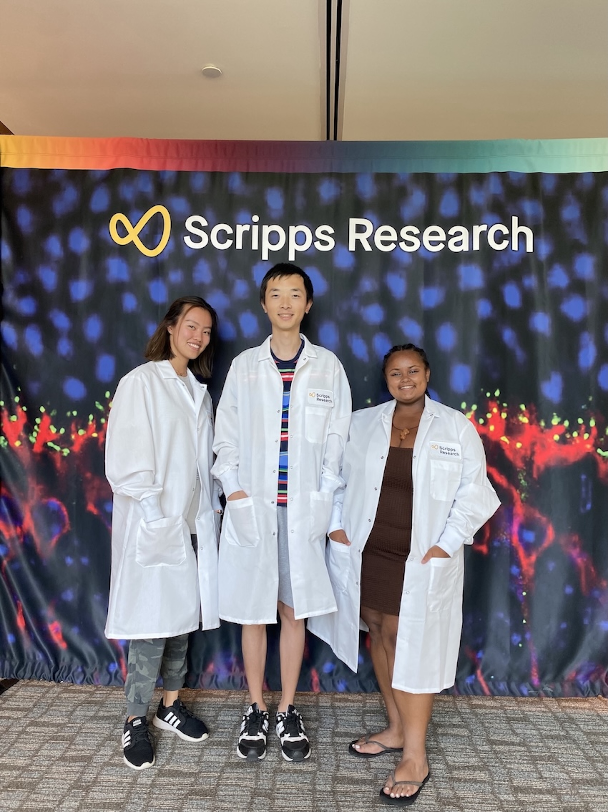

01
Learn by doing
Students gain practical experience through hands-on experiments, behavioral assays, data collection, and iterative troubleshooting.
I believe that students learn science most effectively by actively participating in the process of asking questions, designing experiments, analyzing data, and communicating their findings.
I encourage students to develop their own scientific reasoning while providing guidance when they encounter technical or conceptual challenges.
We’re happy to welcome students from any background!

I emphasize three complementary aspects of research training.
Students gain practical experience through hands-on experiments, behavioral assays, data collection, and iterative troubleshooting.
I encourage students to use quantitative approaches to analyze behavior, visualize data, test hypotheses, and interpret unexpected results.
Students gradually take ownership of experiments, analysis, literature searches, scientific presentations, and research questions.
Research training can combine experimental biology, behavioral neuroscience, genetics, and computational approaches.
Students can develop practical experience with behavioral experiments, Drosophila genetics, neuronal approaches, experimental design, and quantitative behavioral assays.
I encourage students to develop computational skills that allow them to move beyond qualitative observations and extract quantitative information from behavioral experiments.
An important part of research training is learning how to communicate scientific findings clearly. I encourage students to discuss their results, question unexpected observations, and present their work to different audiences.
Effective mentoring is not simply about teaching students how to perform experiments. It is about helping them develop the ability to identify problems, evaluate evidence, make decisions, and pursue scientific questions independently.
I aim to create a research environment in which students feel comfortable asking questions, discussing unexpected results, learning unfamiliar tools, and gradually taking ownership of their research.
As I establish an independent research program, I look forward to mentoring undergraduate, graduate, and postdoctoral researchers interested in behavioral neuroscience, genetics, social behavior, sleep, feeding, circadian biology, and quantitative approaches to animal behavior.
Explore my research →